{kind=link}
{kind=link}
{kind=link}

Фотографии из фондов ГНИМА имени А.В. Щусева.
1986 год
{kind=link}
Ноябрь 1991 года.
Фотография из семейного архива Корольковых
Страницы авторов "Тёмного леса"
Литературный Кисловодск и окрестности
Пишите нам! temnyjles@narod.ru
| 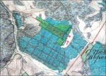 | Фрагмент плана Московской губернии с усадьбой Воронцово. 1824 год. РГВИА |
Парадный въезд в бывшую подмосковную усадьбу Воронцово (или, как ее сегодня чаще называют, - Воронцовский парк) выходит на улицу Архитектора Власова. Это участок исторической Калужской дороги, известной еще с конца XIV века. Позднее она превратилась в шоссе, а после включения в черту Москвы стала улицей.
Псевдоготический ансамбль парадного въезда, получивший свое оформление во времена владения усадьбой генерал-фельдмаршалом князем Н.В. Репниным (1734-1801), ныне является самой эффектной частью усадьбы. Он состоит из двух симметрично поставленных, круглых в плане, двухъярусных башен с примыкающими к ним одноэтажными кордегардиями (караульными помещениями) - символическое напоминание о западноевропейских феодальных замках, кажущееся совершенно неуместным здесь, на малопрезентабельной городской окраине, застроенной безликими производственными зданиями или многоквартирными домами.
Удивительно пластичные, "красиво нарисованные" башни, стилистически сходные с башнями Большого моста в Царицыне, сооруженного по проекту архитектора В.И. Баженова, возможно, имели не дошедшие до нас декоративные завершения - зубцы или пинакли. Контрастное цветовое решение башен подчеркнуто мощными "крепостными" белокаменными цоколями. Сохранившиеся металлические закладные детали показывают, что между башнями ранее были калитка и ворота.
Кордегардии - небольшие скромные домики, трапециевидные ризалиты которых обращены к улице Архитектора Власова. Формы их окон - тоже прямое заимствование из Царицына. Над окнами ризалитов сделаны белокаменные вставки.
Между кордегардиями высится кирпичная арка с кирпичными же (первоначально белокаменными) пинаклями-обелисками по обеим сторонам от нее, завершавшимися шарами на остриях. Арка придает перспективе въезда в усадьбу стремительность, акцентируя главную композиционную ось и вызывая в памяти ворота Петровского подъездного дворца (архитектор М.Ф. Казаков). На наш взгляд, арка изначально возведена чуть позже, чем башни и кордегардии - видимо, в честь некоего значимого события, связанного с Н.В. Репниным.
Когда-то обелиски соединялись с башнями оградой, ныне вместо нее мы видим стенки иной конфигурации. В результате связь между обелисками и башнями оказалась утраченной, арка же превратилась в самостоятельное, отдельно стоящее сооружение, чего не было изначально. Со временем ее свод обрушился. Она еще видна на обнаруженной нами фотографии 1944 года из собрания историка А.А. Спивака и на обмерах, сделанных студентами МАрхИ в 1946 году. На известных нам послевоенных фотографиях арки уже нет - сохранялись только ее боковые части и основания обелисков, почему-то разобранных в конце 1980-х годов в ходе реставрационных работ. Арка и обелиски были воссозданы в 2007 году.
| 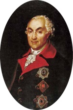 | Портрет князя Николая Васильевича Репнина. Неизвестный художник. Холст, масло. Конец XVIII века |
Неотъемлемая часть ансамбля - небольшой однопролетный мост через фрагмент рва, некогда огибавшего усадьбу со стороны дороги. Мост, несомненно, сооружался вместе с башнями и кордегардиями. До недавних пор он был скрыт под толщей земли и асфальта (раскопан и реставрирован в 2006-2007 годах). Очень эффектно чередование белого камня и большемерного кирпича в арке моста, что прекрасно увязывается с колористикой башен.
Перед мостом совсем близко от проезжей части улицы - два крупных кирпичных пилона, поставленных, по одним данным, в первой четверти XIX, по другим - в конце XIX - начале XX века (один из них воссоздан, поэтому пилоны слегка разной высоты).
Предположить в авторе незаурядного архитектора позволяют хорошие пропорции ансамбля - недаром исследователи приписывали его В.И. Баженову или М.Ф. Казакову, которые, в частности, проектировали дворцы в расположенном южнее Воронцова царском имении Коньково-Троицкое и, выезжая туда из Москвы, не могли миновать Воронцова {1}. Иногда автором называют Д. Кваренги. Впрочем, едва ли авторство в нашем случае будет когда-нибудь документально установлено, поскольку воронцовский усадебный архив периода Репниных считается погибшим в 1812 году. Во всяком случае, зная, как был устроен строительный процесс в ту эпоху, приписывать крупным зодчим работу в Воронцове безосновательно.
Официально ансамбль точной даты возникновения не имеет. Одно время его датировали 1770-ми годами, чем объясняются попытки связать создание ансамбля с торжествами по случаю заключенного Н.В. Репниным Кючук-Кайнарджийского мира (1774) {2}. Но Репнин усадьбой на тот момент еще не владел. В данной связи допустимо лишь отметить, что увеселительные павильоны, воздвигнутые для этих торжеств на Ходынском поле, впервые в России ярко и красочно продемонстрировали возможности готической архитектуры и стали образцом для подобных сооружений, как и выполненные в указанном стиле императорские резиденции - в частности, то же Царицыно и Петровский дворец.
| 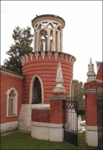 | Северная башня с кордегардией |
Сейчас появление ансамбля датируется примерно 1780-ми годами, однако и такая датировка весьма приблизительна, поскольку документов на сей счет обнаружить не удалось. Кладка стен кордегардий отличается от кладки башен. Этот факт позволяет предположить, что ансамбль имеет два строительных периода, по времени ненамного отдаленных друг от друга. Очевидно, к третьему строительному периоду относится возведение триумфальной арки с обелисками. По нашему мнению, все части ансамбля создавались в 1790-х годах, когда Н.В. Репнин пусть и с перерывами, но жил в Воронцове. То есть это - далеко не первые образцы московской готики XVIII века, как полагали {3}. Кроме того (опять же, на наш взгляд), их трактовка исключительно в качестве "ансамбля парадного въезда" несколько однобока - изначально замысел неизвестного зодчего был гораздо масштабнее. Наличие рва предполагает и наличие валов вдоль него, насыпанных из вынутой земли. Логично предположить, что на валах могли стоять невысокие стены, выполненные в духе архитектуры башен и кордегардий и соединявшие последние с крупными восьмигранными башенными павильонами (возможно, не примыкая к ним, а огибая по периметру). До настоящего времени дошел только северный павильон, позднее ставший Троицкой церковью (находится у пересечения улиц Архитектора Власова и Академика Челомея).
Согласно исследованиям Общества изучения русской усадьбы, проведенным в 1920-х годах, Троицкая церковь была устроена в садовом восьмигранном павильоне {4}. Определение "павильон" закрепилось в литературе, хотя в данном случае оно всего лишь метафора - просто "объект" нуждался в каком-то наименовании. Тем не менее, сознавая условность термина, мы тоже будем им пользоваться.
Местонахождение здания - у оживленной дороги - ставит под сомнение его "павильонную" функцию. Павильоны обычно располагали в глубине парка и делали неотапливаемыми, между тем обнаруженные реставраторами следы печей свидетельствуют о всесезонном (жилом) характере постройки.
Высказанная в фундаментальной книге "Памятники архитектуры Москвы..." версия, что павильон служил охотничьим домиком во время зимних наездов владельца усадьбы, выглядит несерьезно (охота прямо у крупной проезжей дороги - дело странное). Другая версия из той же книги гласит: Воронцово изначально не имело в центральной части капитальных зданий и использовалось для проведения однодневных летних праздников - отсюда якобы и необходимость павильона. Но эта версия опровергается документами, подтверждающими наличие в Воронцове еще ранее господского дома, ткацкой фабрики, кирпичного завода {5}.
|
| Ансамбль парадного въезда в усадьбу и церковь Живоначальной Троицы в Воронцове. Фотографии из фондов ГНИМА имени А.В. Щусева. 1986 год |
| 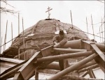 | Инженер-конструктор проекта восстановления Троицкой церкви О.Ю. Корольков проверяет каркас купола перед его установкой. Ноябрь 1991 года. Фотография из семейного архива Корольковых |
| 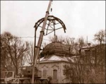 | Установка каркаса купола |
Представляется вымыслом и местная легенда о том, что павильон являлся масонским храмом. Во-первых, таких строений в Воронцове было два - аналогичный южный павильон показан еще на плане 1848 года {6}. Во-вторых, для строительства масонского здания на территории обширного Воронцова владельцы, несомненно, выбрали бы более уединенный уголок. Однако легенда оказалась живучей, поскольку Н.В. Репнин достаточно высоко стоял в иерархии "вольных каменщиков" {7}, а современное искусствоведение склонно интерпретировать как масонские храмы любые усадебные постройки непонятного назначения, да к тому же неординарной конфигурации.
| 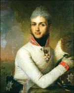 | Портрет князя Николая Григорьевича Репнина. В.Л. Боровиковский. Холст, масло. 1806 год |
| 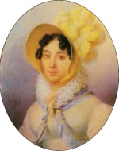 | Портрет княгини Варвары Алексеевны Репниной. Ж.-А. Беннер. Холст, масло. 1817 год |
По данным натурных обследований памятника было установлено: все существующие его части сложены из одного и того же кирпича (что подтвердилось в ходе ремонтно-реставрационных работ начала 1990-х годов) - следовательно, изменений относительно первоначального вида он практически не претерпел, за исключением колокольни 1838 года, ныне воссозданной, и новодельной апсиды начала 1990-х (см. ниже). Отметим: план церкви очень похож на планы кордегардий, отличаясь от них только криволинейной формой центральной части западного фасада. Данное обстоятельство позволяет предположить одновременность сооружения кордегардий и обоих павильонов. Кстати, церкви с подобным объемным решением в практике отечественного зодчества неизвестны.
Таким образом, получается, что ансамбль парадного въезда дополнялся павильонами, тоже формировавшими облик усадьбы со стороны дороги, определявшими ее, усадьбы, границы и, возможно, соединенными стенами с кордегардиями. Во всяком случае, соединение имело место посредством аллей, одна из которых - между церковью и северной кордегардией - частично сохранилась; параллельно ей идет асфальтовая дорожка.
Поэтому церковь - отнюдь не самая старая постройка усадьбы, как сообщают упомянутые выше "Памятники архитектуры Москвы" {8}. Вероятнее всего, она должна датироваться не серединой XVIII века, а 1790-ми годами - так же, как и ансамбль парадного въезда, то есть временем Н.В. Репнина, о чем говорят и выложенные в кирпиче рамочные лопатки и увенчанные фронтонами наличники, обнаруживающие стилистическую близость здания к кордегардиям.
Павильон переделали в церковь Троицы Живоначальной, давшую Воронцову еще одно название - Троицкое, в 1806-1807 годах {9}, уже после смерти Н.В. Репнина. Возможно, это связано с рождением у Н.Г. и В.А. Репниных (см. ниже) сына Василия, а также с превращением Воронцова в популярную дачную местность - ситуация, потребовавшая создания для отдыхающих определенных удобств. При смене функций павильона его псевдоготическое декоративное оформление заменили классицистическим. Видимо, тогда же стали арочными оконные проемы. Перестройку павильона в церковь финансировали внук Н.В. Репнина князь Николай Григорьевич Репнин и его жена Варвара Алексеевна {10} - лишнее доказательство их связи с Воронцовым и достаточно частого там пребывания. Н.Г. Репнин внес в "сохранную казну Воспитательного дома" 15 тысяч рублей, на проценты с которых церковь содержалась. Известная по краеведческой литературе версия об устройстве церкви не Репниными, а сестрой А.Н. Волконской баронессой Д.Н. Каленберг не подтверждается документально. При церкви предполагалось открыть "прибежище для бедных стариков" в память Н.В. Репнина и "училище для бедных девушек" в память умершей дочери Н.Г. и В.А. Репниных Марии {12}. Училище было создано, но находилось не в Воронцове, а в Москве - в усадьбу оно лишь ненадолго переезжало в 1812 году. Княжна Варвара Николаевна Репнина вспоминала: "Мама" перевела из Москвы школу, которую устроила там на свои средства и открыла после смерти своей старшей дочери Маши, следовательно, в 1802 или 1803 году. Воспитанниц было, кажется, восемь. Во время нашествия французов они переехали из Москвы в Воронцово, а оттуда в Никольское, имение моего отца возле Нижнего [Новгорода], потом возвратились в Москву и в конце концов в Полтаву. Среди этих девиц были сестры доктора Иноземцева {13} ... и наша добрая маленькая Марфа Андреевна Коноплина, окончившая свои дни, как и княгиня Черкасская {14}, у меня в Петровском парке, где в глубине двора находился приют для старух" {15}.
Во время Отечественной войны 1812 года воронцовская церковь подверглась разграблению, позже (1816) была приведена в порядок и вновь освящена. В 1838 году очередной владелец усадьбы С.И. Муханов на собственные средства реконструировал церковь, пристроив к центральному фасаду небольшую двухъярусную колокольню, заменившую предыдущую; при нем появился также придел во имя преподобного Сергия Радонежского {16}. Очень примитивная и невыразительная колокольня (из вежливости называемая искусствоведами "лаконичной") не соответствует "эстетическому вкусу в архитектуре" {17}, которым якобы обладал Муханов. Возможно, ее автором являлся московский губернский архитектор Д.Ф. Борисов, работавший в других подмосковных имениях Мухановых - Никольском-Здехове (Богородский уезд) и Воздвиженском (Дмитровский) {18}.
После 1938 года церковь не функционировала, хотя официально была закрыта только в 1944-м и приспособлена под склад местного сельпо. Очевидно, тогда же ее обезглавили, а колокольню разобрали. С вхождением Воронцова в состав Москвы здание передали заводу игрушек "Кругозор". Потом оно оказалось бесхозным и с каждым годом все больше разрушалось, придя постепенно в аварийное состояние. В 1990 году его возвратили Московской Патриархии. За пять лет (1991-1995) церковь восстановили, колокольню воссоздали {19}. При этом со стороны алтаря пристроили апсиду, которой раньше не существовало; были допущены и другие отступления от первоначального облика здания (архитектор-реставратор Н.Г. Мухин).
| 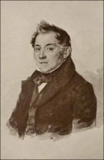 | Портрет Сергея Ильича Муханова. П.Ф. Соколов. Около 1842 года |
Трактовка павильонов как единого целого с башнями и кордегардиями дает возможность считать все перечисленные постройки одним ансамблем, смысл которого заключался в придании усадьбе Воронцово со стороны дороги вида увеселительной "турецкой крепости" - эффектной романтической театральной декорации с крепостными башнями и триумфальной аркой. Тем самым, по сути, выставлялось напоказ, что владельцем Воронцова был герой русско-турецких войн генерал-фельдмаршал Н.В. Репнин. Подобные мемориально-триумфальные "крепости" сооружались и в подмосковных усадьбах других военачальников. Наиболее известная из них - в усадьбе Михалково графа П.И. Панина, поскольку этот ансамбль дошел до нас почти полностью. От "крепостей" в усадьбах Васильевское графа В.М. Долгорукова-Крымского (более известной по позднейшему названию - Мамонова дача) и Троицкое-Кайнарджи графа П.А. Румянцева-Задунайского ничего не сохранилось. Обычно такие "крепости" имитировали реальные турецкие, взятые под руководством владельцев усадеб, хотя, безусловно, не являлись точными копиями, а проектировались "по мотивам". Применительно к Воронцову образцом, безусловно, был Мачин (за победу в Мачинском сражении в 1791 году Н.В. Репнин получил орден Святого Георгия 1-й степени). После смерти генерал-фельдмаршала первоначальное значение ансамбля забылось, а снос одного из павильонов, превращение другого в церковь, разрушение рва, вала и стены сильно обеднили его. В результате "крепость" стала восприниматься исследователями лишь как "парадный въезд".

| Восстановленная Троицкая церковь |
| 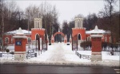 | Парадный въезд в усадьбу Воронцово Башни и арка |
| 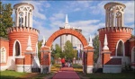 |
Есть еще одно основание полагать, что до 1812 года стены на валу существовали, и именно их наличие обусловило выбор усадьбы Воронцово в качестве места изготовления Ф. Леппихом пресловутого воздушного шара. Ров с валами и стенами представлялся надежным препятствием для любопытствующей публики. В самом деле, "народ тогда толпами ходил из Москвы на расстояние семи верст", чтобы поглазеть на шар. "Это было на уединенной даче, окруженной забором, куда внутрь никого не пускали, но народ, возвращаясь домой, рассказывал, что видел своими глазами, как готовился шар на верную гибель врага, и тем довольствовался" {20}.
Кордегардии, ставшие в начале XIX века домами причта и пострадавшие во время наполеоновского нашествия {21}, к середине столетия обветшали. Местный священник А.И. Синайский в 1851 году в клировой ведомости писал, что "зимой жить в них невозможно по холоду" {22}. В советский период кордегардии занимали различные учреждения и организации. В 1930-х годах здесь размещались сельсовет и чайная. Тогда же, судя по фотографии, верх южной башни был разрушен.
После реставрации 1970-х годов ансамбль парадного въезда долгое время никак не использовался. В 1980-х Черемушкинская районная организация ВООПИиК составила акт о частичном разрушении одной из кордегардий, после чего здание восстановили {23}. В конце 1990-х кордегардии и башни, изображения которых к тому моменту уже являлись элементами герба Юго-Западного округа столицы, были отреставрированы. Качество реставрации далеко не везде однозначно, в том числе из-за использования современного кирпича.
В 2006 году прошла последняя реставрация. Весь ансамбль окрасили, но не в кирпично-красный, а в розовый цвет, создающий впечатление новодела. Будем надеяться, что следующая реставрация окажется более удачной.
{1} Коробко М.Ю. Дворец Екатерины II в селе Коньково / Царские и императорские дворцы. М., 1997. С. 142-145; Он же. Коньково / Московский журнал. 2011. N11. С. 16-29.
{2} Ильин М.И. Подмосковье. М., 1963. С. 306-307.
{3} Векслер А.Г., Пирогов В.Ю. Археологические исследования усадьбы Воронцово / Русская усадьба. Сборник Общества изучения русской усадьбы. Вып. 18 (34). СПб., 2013.С. 102.
{4} Памятники усадебного искусства. [Вып.] 1. Московский уезд. М., 1928. С. 11.
{5} Памятники архитектуры Москвы. Окрестности старой Москвы (юго-восточная и южная части территории от Камер- Коллежского вала до нынешней границы города). М., 2007. С. 294.
{6} РГВИА. Ф. 846. Оп. 16. Д. 21380. Л. 1.
{7} Серков А.И. Русское масонство. 1731-2000. Энциклопедический словарь. М., 2001. С. 1222.
{8} Памятники архитектуры Москвы. С. 294.
{9} РГИА. Ф. 796. Оп. 93. Д. 1032. Ч. 1. Л. 6. См. также: Вайнтрауб Л.Р. Храм Святой и Живоначальной Троицы в Воронцове. 1807-1997. М., 1999.
{10} РГИА. Ф. 796. Оп. 93. Д. 1032. Ч. 1. Л. 6.
{11} ОХД до 1917 г. Ф. 203. Оп. 757. Д 2563. Л. 28 - 28 об.
{12} РГИА. Ф. 796. Оп. 93. Д. 1032. Ч. 1. Л. 3-4.
{13} Иноземцев Федор Иванович (1802- 1869) - врач, профессор хирургии медицинского факультета Московского университета (1835-1859), действительный статский советник.
{14} Черкасская (урожденная Васильчикова) Екатерина Алексеевна (1825-1888) - княгиня, троюродная сестра княжны В.Н. Репниной (см. сноску 15) по материнской линии.
{15} Воспоминания княжны Варвары Николаевны Репниной (1808-1839) / Российский архив. [Т. XVI]. М., 2007. С. 304.
{16} ОПИ ГИМ. Ф. 117. Ед. хр. 426. Л. 4; ОХД до 1917 г. Ф. 203. Оп. 774. Д. 2327. Л. 382.
{17} Из записок Марии Сергеевны Мухановой, фрейлины высочайшего двора. М., 1878. С. 53.
{18} Вайнтрауб Л.Р. Указ. соч. С. 26.
{19} Саванина В. Восстановлен храм Троицы Живоначальной в Воронцове / Сестры и братья. 1996. N5. С. 75-78.
{20} Родных А. Тайная подготовка к уничтожению армии Наполеона в двенадцатом году при помощи воздухоплавания. СПб., 1912. С. 54.
{21} ОХД до 1917 г. Ф. 203. Оп. 752. Д. 993. Л. 60-61.
{22} Вайнтрауб Л.Р. Указ. соч. С. 29.
{23} Коробко М.Ю. Москва усадебная. Путеводитель. М., 2005. С. 82.
Современные фотографии выполнены автором в 2013-2015 годах
| 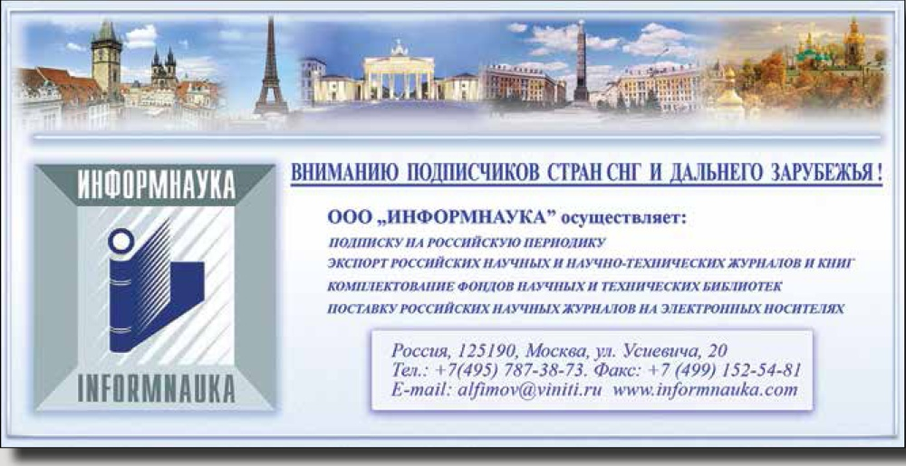 |
Последнее изменение страницы 4 Nov 2018
{kind=link}
{kind=link}
{kind=link}
{kind=link}
{kind=link}
{kind=link}
{kind=link}